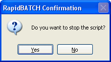

CONFIRM
CONFIRM
CONFIRM
CONFIRM
| Syntax: | CONFIRM answer = question |
| Description: | CONFIRM is another shortcut for a messagebox-dialog with YES-NO-Buttons. If the user presses YES, the result-variable gets the value '0' ([true]), else '-1' ([false]).  |
| Examples: | repeat confirm [quit] = 'Do you want to terminate this script?' until [quit] = [true] echo 'Script is now terminated.' end |
| Remarks: | To change CONFIRM's standard title for the messagebox (default: "RapidBATCH Confirmation"), change its value using the pre-declared variable [Confirm_Title]. Use the MSGBOX-function, to display an individually designed messagebox-dialog to the user. |